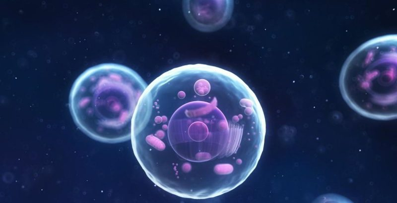
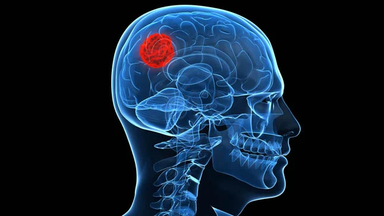
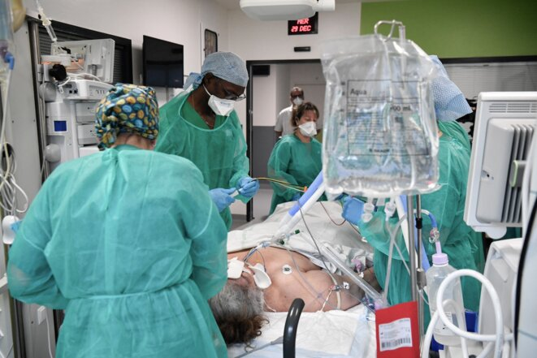

El cáncer es una enfermedad caracterizada por la proliferación celular descontrolada. Se origina cuando mutaciones en el ADN alteran el ciclo celular.
Según la Organización Mundial de la Salud (OMS, 2023), el cáncer es una de las principales causas de muerte mundial.
En condiciones normales, el ciclo celular está regulado por proteínas como ciclinas y quinasas dependientes de ciclinas.
Cuando ocurre una alteración genética, las células evitan la apoptosis y continúan dividiéndose sin control, pudiendo generar metástasis.
El Instituto Nacional del Cáncer (NCI, 2023) explica que las mutaciones acumuladas favorecen el crecimiento tumoral.


El cáncer afecta órganos vitales, sistema inmunológico y calidad de vida.
También genera impacto económico y desigualdad en el acceso a tratamientos.
La OMS indica que hasta un 30–50% de los casos de cáncer pueden prevenirse mediante hábitos saludables.
- Evitar el consumo de tabaco.
- Mantener alimentación equilibrada.
- Realizar actividad física.
- Evitar sustancias carcinógenas.
- Realizar chequeos médicos periódicos.
La educación científica fomenta decisiones responsables para la protección del bienestar integral.
Organización Mundial de la Salud (2023). Cancer Fact Sheet.
National Cancer Institute (2023). Understanding Cancer.